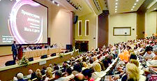
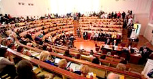
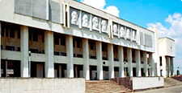

21 Ноября 2014Итоги проведения XIV Всероссийского научного форума «Мать и дитя» и V съезда акушеров-гинекологов России
20 сентября 2014 года в Москве состоялись XIV Всероссийский научный форум «Мать и дитя» и V съезд акушеров-гинекологов России. В работе форума и съезда приняли участие 4558 врачей из 20 стран, 79 субъектов, 285 городов РФ. Обсуждены наиболее важные и актуальные вопросы акушерства, гинекологии и перинатологии. Обширная научная программа форума была ...
(читать полностью)
18 Ноября 2014Конференция «Репродуктивное здоровье – междисциплинарные аспекты»
24 - 25 ноября 2008 года в Центральном доме ученых РАН состоится научно-практическая конференция «Научно-практическая конференция «Репродуктивное здоровье – междисциплинарные аспекты» посвященная Году семьи в Российской Федерации. Организаторы конференции: ФГУ «Научный Центр акушерства, гинекологии и перинатологии им. В.И. Кулакова ...
(читать полностью)
07 Ноября 2014Британские учёные доказали безвредность сотовых телефонов для здоровья
Британские учёные доказали безвредность сотовых телефонов для здоровья. По данным исследователей Манчестерского университета, электромагнитное излучение от мобильных устройств никак не влияет на функционирование флавопротеинов — белков, играющих важную роль в управлении нервной системой и восстановлении ДНК ...
(читать полностью)
06 Ноября 2014В Канаде разработана «умная» ткань, следящая за здоровьем человека

Исследователи из Канады разработали многослойную «умную» ткань, следящую за здоровьем человека. Ткань представляет собой своеобразное полотно с мини-комплексом из антенны и группы сенсорных датчиков, она способна выдерживать температуру окружающей среды до 350°С. Группе исследователей-химиков из Канады удалось, путем многолетних исследований ...
(читать полностью)
02 Ноября 2014Ученые уверены, что сила мышц расскажет о здоровье человека
Группа исследователей из Университета Саутгемптона провела исследование, в результате которого пришла к выводу, что мышечная сила человека может очень многое рассказать о здоровье. Так, исследователи проанализировали силу хвата почти 50 тысяч мужчин и женщин всех возрастных групп. Оказалось, что мужчины были сильнее и больше набирали мышечную массу, чем женщины
(читать полностью)
01 Ноября 2014В Волгоградской области учреждения медицины, образования ждет объединение
Единой структурой станут детская поликлиника №9 и консультационно-диагностический центр для детей №1. Объединение ждет еще два медучреждения - клиническую больницу №4 и поликлинику №1, но окончательного решения по этому вопросу пока еще нет. Такие меры, как считают в администрации, позволят более эффективно управлять финансовыми потоками, централизовать
(читать полностью)
28 Октября 2014Новые возможности миасской медицины
4 декабря в городская больнице № 3 произошло важное событие - впервые в Миассе была проведена операция по установке стента в сердечную артерию. Первой пациенткой стала женщина 77 лет, которая поступила в больницу с острым инфарктом миокарда. На этапе оказания скорой помощи ей был введён препарат, который растворяет тромб в артерии
(читать полностью)
26 Октября 2014«Пожалуйста, жалуйтесь!» У зауральцев есть шанс рассказать о реальной ситуации в медицине
У жителей Зауралья есть возможность высказать свое мнение о состоянии медицины в регионе. Сегодня, 10 декабря, директор департамента здравоохранения Лариса Кокорина примет участие в работе «Горячей телефонной линии правительства Курганской области». Она ответит на вопросы, связанные с деятельностью лечебных учреждений. Звонить можно с 16 до 17 часов ...
(читать полностью)
20 Октября 2014В Приморье создадут центр ядерной медицины
В Приморском крае появится ядерная медицина. Работа над созданием уникального центра ядерной медицины ДВФУ уже началась. Соответствующее заявление сделал вице-губернатор Приморья Павел Серебряков, курирующий сферу здравоохранения, во время подведения предварительных итогов 2014 года. Павел Серебряков рассказал, что прое
(читать полностью)
19 Октября 2014Проект об интеграции медицины Крыма в законодательство РФ внесен в ГД
Согласно пояснительной записке к законопроекту, будет вестись госконтроль качества и безопасности медицинской деятельности в этих регионах. При этом проверки применения больницами порядков и стандартов оказания медпомощи будут проводиться с 1 января 2016 года.
К медицинской и фармацевтической работе допустят тех, кто до принятия Крыма в состав России ...
(читать полностью)